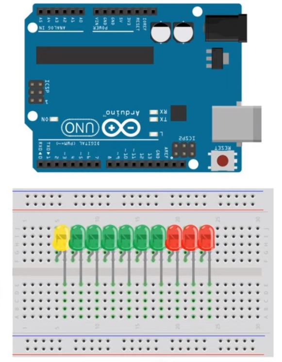
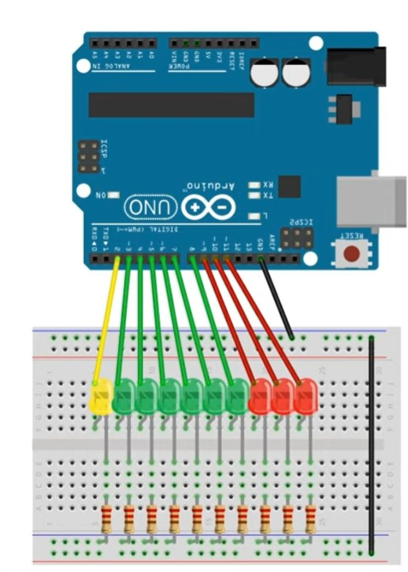
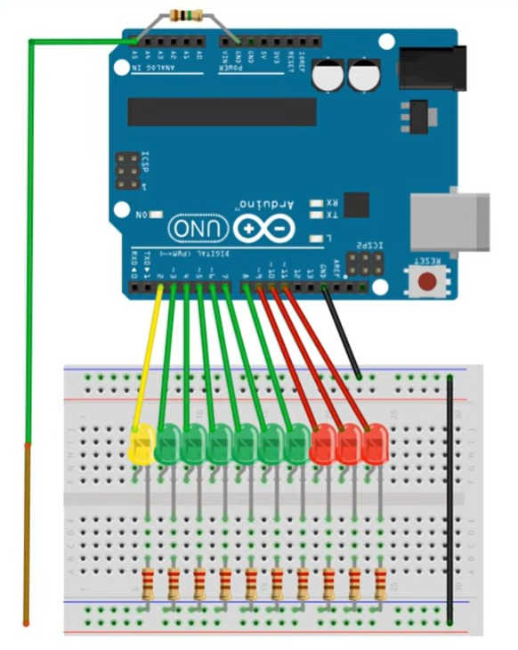

Con el fin de dar a entender correctamente las conexiones del artefacto realizado a continuación nos apoyamos de una herramienta llamada Tinkercad (la puede encontrar en www.tinkercad.com), que permite simular en un entorno controlado como se llevará a cabo el montaje.
Principalmente la construcción se lleva a cabo en 3 fases las cuales se verán a continuación:
- Se realizo la conexión de los leds a cada lado de la protoboard con el fin de tener una correcta polarización en esta de la siguiente forma como se puede observar a continuación:  Se llevan a cabo las conexiones de los leds.
- Posteriormente se hace uso de la Arduino y las resistencias de 270 Ohm, y procedemos a conectarlas de la siguiente forma:  Se llevan a cabo las conexiones de los leds a la arduino.
- Luego procedemos a conectar un cable con el fin de que este actúe como antena receptora de los CEM (Campos electromagnéticos), quedando el artefacto final de la siguiente forma:  Se realizan las conexiones pertinentes